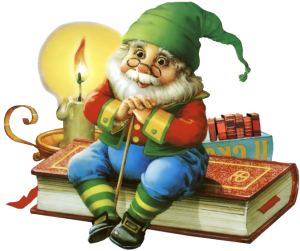
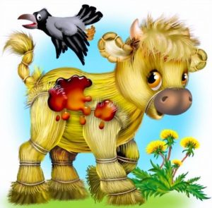

Так що ж таке Ка́зка?
Ка́зка — це народно-поетичний або писемно-літературний твір про передбачувано вигадані події чи осіб, іноді за участю фантастичних сил, який має повчальну мету.
Розрізняються народні казки — традиційні та початково усні, без достеменно відомого автора, та літературні — вільнішої форми, які створюються письменниками і поширюються в друкованих виданнях. В народній творчості казка є одним з основних жанрів, де постає як твір переважно чарівного, авантюрного чи побутового характеру з вказівкою на свою вигаданість. В багатьох народних казках відображено минулі суспільні відносини та уявлення про світоустрій. У переносному значенні казка — вигадка взагалі, те, що не відповідає дійсності.
У Європі існувала довга усна традиція, пов'язана з народною казкою, що привернула значну увагу етноантропології. Крім того, чимало дослідників і письменників збирали народні казки та створювали їх основі нові. З українських такими є діячі XIX ст.: Іван Франко, Євген Гребінка, Петро Гулак-Артемовський, Микола Цертелєв, Михайло Максимович, Ізмаїл Срезневський, Левко Боровиковський, Микола Костомаров, Осип Бодянський; XX ст.: Агатангел Кримський, Вікторія Юзвенко, Петро Лінтур, Іван Березовський.
Характерні особливості
В основі казки лежить захоплива розповідь про вигадані події та персонажів, котрі в момент сприйняття переживаються як реальні. Казкові події поза казкою, на відміну від міфу, сприймаються як неіснуючі та не містять пояснення походження чого-небудь, а персонажі узагальнено відображають представників суспільства та його цінності. Події в казці принципово не можуть бути пояснені читачем (слухачем) з точки зору життєвого досвіду, наукових чи релігійних знань, що відрізняє казку від фантастики. Головні персонажі традиційної казки абстрактні, часто це загальні назви (царевич, дід та баба, вовк тощо), а якщо мають ім'я, то їх неможливо ототожнити з конкретними історичними або ж вигаданими постатями. Персонажі володіють вираженими схвалюваними (або навпаки несхвалюваними) в суспільстві рисами (сміливість, винахідливість, пошана до старших тощо; неслухняність, жадібність, балакучість). Події казки відбуваються в невизначений час — «колись давно». Ці риси відрізняють казку від легенди, билини, саги, переказу та епосу, час дії яких можна з'ясувати.
Для казки характерні сталість структури і композиційних елементів, протиставлення дійових осіб чи їх груп, відсутність розгорнутих описів природи і побуту. Сюжет казки багатоепізодний, з драматичним розвитком подій, зосередженням дії на героєві та щасливим і/або повчальним закінченням. Казка традиційно прозова, за обсягом перевищує байку та не містить, як вона, сатири.
Функціональна палітра казки надзвичайно розмаїта: її естетичні функції доповнюються і взаємопереплітаються з пізнавальними, морально-етичними, соціально-виховними, розважальними та ін. Казки віддалених народів світу мають подібні сюжети та персонажів, що пояснюється подібністю культурно-історичних умов їх життя. Водночас казки відзначаються національними особливостями, відображають спосіб життя народу, його працю і побут, природні умови, а також індивідуальні риси виконавця-оповідача (казкаря). Тому казки, як правило, побутують у багатьох варіантах
Класифікація
Недосконалою, але загальноприйнятою у світі є Класифікація Аарне-Томпсона, оформлена в 1912 році, що поділяє казки за сюжетами та змістом на:
- Казки з тваринами
- Казки з магією
- Релігійні казки
- Романтичні казки
- Казки про дурного огра
- Жарти й анекдоти
За поширеним варіантом Володимира Проппа, казки поділяються на:
- Чарівні казки
- Чарівні казки
- Казки про тварин, рослин, неживу природу та предмети
- Побутові та новелістичні казки
- Небилиці
- Докучливі казки
Народні казки
Народна казка є фольклорним жанром і зазвичай передається усно. В основі її сюжету лежить певний конфлікт, що спонукає персонажів до дії. Вона має традиційні зачин і кінцівку (напр. «Жили собі дід та баба…», «…жили-поживали та добра наживали»), сюжетні ходи та персонажів (напр. змій, батьки та троє дітей). Мова казки повсякденна, в той же час з усталеними епітетами (напр. красна дівиця, добрий молодець) та повторами (напр. ішов-ішов, думав-думав). Інколи в казці наявні традиційні вислови, що поєднують одну віддалену подію з іншою (напр. «швидко казка мовиться, та не швидко діло робиться»). Їй властиві узагальнення всього описуваного, персонажі мають сталі функції, що повторюються з казки до казки (шукач мети, дарувальник, викрадач тощо).
Народна казка часто розглядається у зв'язку з міфами. Існує дві основні позиції щодо їх стосунків. Згідно першої, казки — це первісні міфи, що втратили своє священне значення та реалізацію в ритуалах.
Герой казки завжди демонструє конкретну модель поведінки з відповідними наслідками, на відміну від міфу, де герой може здійснювати несхвалювані чи взагалі табуйовані вчинки безкарно, як і зазнати нічим не компенсованих страждань. Казка завжди самодостатня і не потребує продовження, тоді як багато міфів продовжують інші та незрозумілі без них
Літературні казки
Авторська казка розвивається не стільки в рамках фольклору, скільки в рамках друкованої літератури, тому ще називається літературною казкою. Літературна казка може як наслідувати народну, так і мати суттєві відмінності. Вона може мати більшу кількість сюжетних подій, паралельні сюжетні лінії та одночасні події, що відбуваються в різних місцях, велике число дійових осіб. Авторська казка не обов'язково володіє традиційними зачинами, кінцівками та епітетами. Часто літературні казки перетворюються на розгорнуті казкові повісті або містять в собі риси інших жанрів. За небагатьма винятками, вони орієнтовані на дитячу аудиторію[8]. Літературна казка може мати пряме («Розкажу я вам, діти…») чи непряме («Кожний з вас чув…») звертання до слухача, чого не буває у народній казці
З середини XX століття набуває популярності фентезі — жанр літератури, що описує неіснуючі, неможливі світи. З огляду на опис неіснуючого й неможливого в казці, фентезі розглядається або як література (та інші форми мистецтва), що містить казкові елементи, або як ширший жанр, частиною якого є казка. Серед всесвітньо відомих творів фентезі «Володар перснів» Дж. Р. Р. Толкіна, «Гаррі Поттер» Дж. К.Роулінг, пригоди Конана-кіммерійця Р. Говарда та багато інших. В Україні цей жанр представляє, наприклад, Г. Л. Олді, використовуючи в своїх творах сюжети казок, міфів та легенд народів світу.
Українські казки
Українські народні казки
Михайлом Грушевським було виділено головні мотиви українських народних казок:
- Космічні сили: сонце, місяць, вітер, мороз, град, яким людина протистоїть, змагається з ними, щоб досягти порядку.
- Фантастичні надприродні земні сутності: дух землі, або лісовик
- Баба-людоїдка: лиха баба, особливо небезпечна для дітей, котрих хоче з'їсти, але ті різними способами рятуються від неї або обдурюють
- Змій: під нашаруванням мотиву святих змієборців (св. Юрія, Дмитра, Федора) і християнської демонології, де змій є звичайним втіленням нечистої сили
- Кощій Безсмертний: образ, паралельний Змієві
- Доля, Недоля, Злидні: комплекс образів, доволі хитких і складних, які то наближаються до чисто поетичних персоніфікацій людського життя і незрозумілого збігу обставин, то переходять в більш конкретизовані, фантастичні образи істот з самостійним існуванням
- Доля, Недоля, Злидні: комплекс образів, доволі хитких і складних, які то наближаються до чисто поетичних персоніфікацій людського життя і незрозумілого збігу обставин, то переходять в більш конкретизовані, фантастичні образи істот з самостійним існуванням.При цьому герой казки:
- Часто має чудесного коня та товаришів з надзвичайними здібностями чи незвичайного походження. В подорожах йому допомагають чарівні звірі.
- Нерідко зазнає метаморфоз — перетворюється на тварин аби втекти від переслідування чи досягти певного місця.
- Користується чудодійними засобами — зіллями, показниками шляху, свідченнями правди на боці героя.
Родинні мотиви: ненормальні родинні відносини в патріархальній родині, котрі належить усунути:
- Зла мачуха та її прийомна донька
- Недобра жінка або сестра
- Добра, мудра помічниця, котра виправляє забуття зроблених героєм добрих справ, що сталося через недотримання ним заборони.
- Добра і вірна жінка, місце якої займає її недобра сестра
- Сватання або відшукування викраденої жінки
- Засуджені на смерть, вигнані або чудесними й природними засобами урятовані і виховані діти
- Зневажені (упосліджені) діти: скривджені старшими молодші діти, які здобувають щастя і багатство
- Три брати, менший брат: вдачливий дурень, знехтуваний менший брат, що виявляє більше мудрості, моральності за старших, тому здобуває успіх
- Суперництво двох братів: заздрісного й багатого старшого і бідного й доброго молодшого
Українські літературні казки
Літературна казка на території України спочатку була представлена авторськими переказами та інтерпретацією фольклорних сюжетів, стилізацією під народну казку, використанням народних мотивів тощо. Такі казки створювали зокрема письменники XIX ст.: Марко Вовчок, Степан Руданський, Іван Манчжури, Панас Мирний, Олена Пчілка, Леся Українка, Іван Франко, Михайло Коцюбинського. З часом українські, як і зарубужні, авторські казки відходять від фольклорних витоків, зображають у казковій формі злободенні питання, завуальовано критикують негативні суспільні явища.
У XX ст. пишуться казки Анатолія Дімарова, Анатолія Шияна, Богдана Чалого, Валентина Бичка, Всеволода Нестайка, Дмитра Чередниченка, Івана Неходи, Леоніда Первомайського, Лариси Письменної, Марії Пригари, Михайла Стельмаха, Миколи Трублаїні, Наталії Забіли, Оксани Іваненко, Платона Воронька, Юрія Збанацького, Юрія Ярмиша та ін. У другій половині ХХ ст. виникають жанрові підвиди авторської казки: пізнавальні, морально-дидактичні та пригодницько-розважальні. Наприкінці XX — початку XXI ст. жанр літературної казки оновився такими жанровими різновидами, як казки-фентезі, казки-притчі, казки-новели, казки-легенди, казки-мініатюри, казки-балади, казкові хроніки, міські казки тощо
У жанрі української літературної казки активно працюють Леся Мовчун, Богдана і Дзвінка Матіяш, Мар'яна і Тарас Прохасько, Зірка Мензатюк, Володимир Читай та ін. Відомі повісті-казки Галини Малик, Сергія Гридіна, Марії Чумарної, Олександра Дерманського, Галини Пагутяк, Лесі Вороніної, Андрія Бачинського та ін.
Казка "Нерозумне кошеня"
Принесла кицька мишеня і каже кошеняті:
— Ось тобі, грайся, учись миші ловити.І пішла.
Кошеня торкнуло лапкою мишку раз, удруге. Лежить мишка і не
поворухнеться.
Схопило злегка зубами, а мишка:
— Ой, ой! Мені ж боляче!Кошеня розціпило зуби, а лапою мишку
тримає.
— Відпусти мене,— просить мишка.
— Не можу,— каже кошеня,— мене мама буде сварити.
— Моя теж сваритиме, якщо я не прийду.
— То твоя мама, а то — моя! Вона буває дуже зла, як розгнівається,—
каже кошеня.
— А що ти зі мною зробиш?
— Повчусь, як миші ловити, а тоді мама прийде, скаже, що робити.
— Хіба так учаться? — пропищала мишка.
— А як? — дивується кошеня.
— А так: я буду тікати, а ти наздоганяй — як у квача грають.
— Це цікаво,— погоджується кошеня.
— І дуже весело,— пропищала мишка.— Я як долічу до трьох, ти зразу ж
мене відпускай.
І тільки кошеня відняло лапу, мишка шусть — і нема. Як вітром
здуло.
Лаяла кицька кошеня. Вуха нам'яла, щоб пам'ятало кошеня науку.